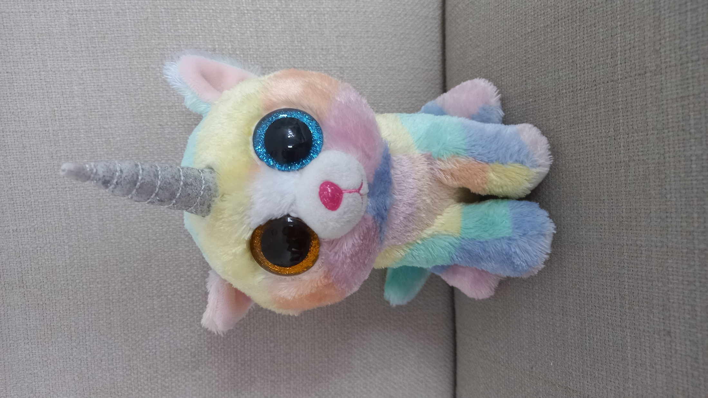
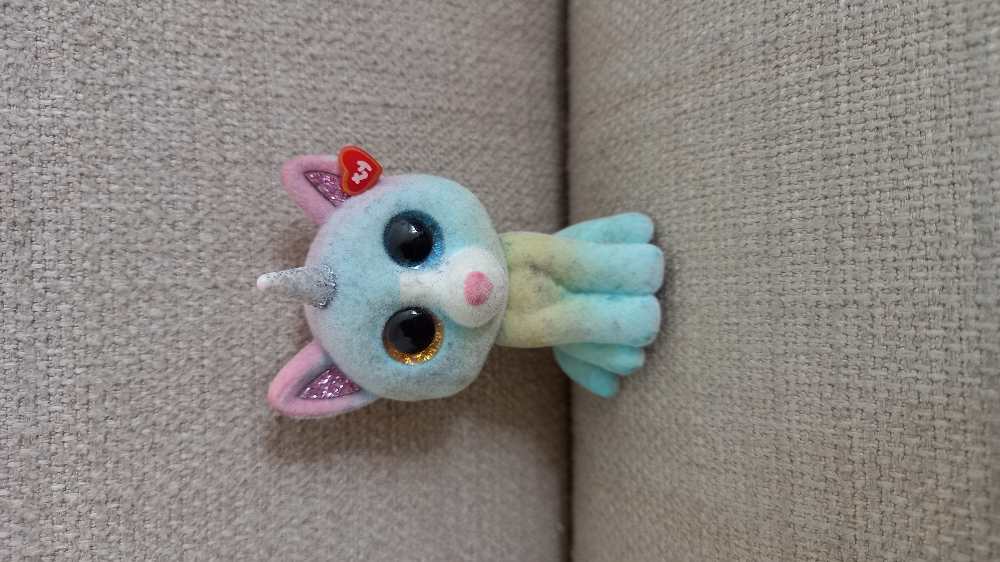

She is a Unicat, the only one left apart from her sisters!
She was born in 2015, as a Unicat, a very special species of cat due to the horn, rarity, and mulitcoloured eyes!
Her parents have to work most of the time, due to hospital jobs.
Scroll down to find out more about her little sister: Pastel!
2. She was her owner's first Beanie Boo ever! That is why her tag isn't with her anymore.
Her parents have to work most of the time, due to hospital jobs.
Scroll down to find out more about her little sister: Pastel!
Fun Facts:
1. When she was born, both of her eyes were blue, but one of them slowly changed when she got older!
2. She was her owner's first Beanie Boo ever! That is why her tag isn't with her anymore.
Pastel

Pastel was born in 2018, with her horn already on her head! (This is very rare)
Fun Facts:
1. Unlike Heather, Pastel's eyes turned different colours in only a year!